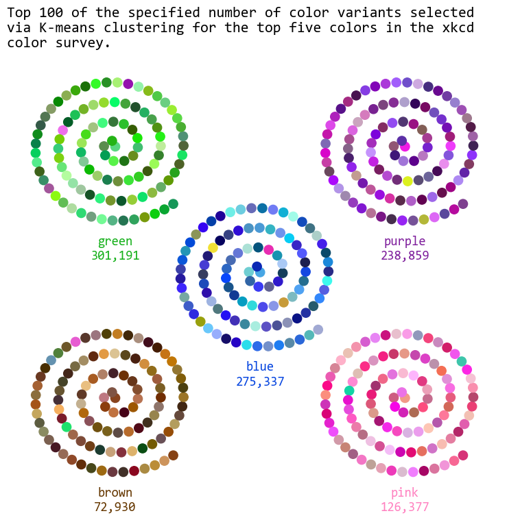

import pandas as pd
import numpy as np
import matplotlib.pyplot as plt
from matplotlib import colors
import colorsys
from sklearn.cluster import KMeans
from sklearn.metrics import pairwise_distances_argmin_min
import textwrapTidyTuesday data for 2025-07-08
answers = pd.read_csv('https://raw.githubusercontent.com/rfordatascience/tidytuesday/main/data/2025/2025-07-08/answers.csv')
color_ranks = pd.read_csv('https://raw.githubusercontent.com/rfordatascience/tidytuesday/main/data/2025/2025-07-08/color_ranks.csv')
users = pd.read_csv('https://raw.githubusercontent.com/rfordatascience/tidytuesday/main/data/2025/2025-07-08/users.csv')answers| user_id | hex | rank | |
|---|---|---|---|
| 0 | 1 | #8240EA | 1 |
| 1 | 2 | #4B31EA | 3 |
| 2 | 2 | #584601 | 5 |
| 3 | 2 | #DA239C | 4 |
| 4 | 2 | #B343E5 | 1 |
| ... | ... | ... | ... |
| 1058206 | 152397 | #7238F0 | 1 |
| 1058207 | 152398 | #8E14CD | 1 |
| 1058208 | 152398 | #0A49E7 | 3 |
| 1058209 | 152400 | #38A30E | 2 |
| 1058210 | 152401 | #4D004B | 1 |
1058211 rows × 3 columns
answers['rank'].unique()array([1, 3, 5, 4, 2])color_ranks| color | rank | hex | |
|---|---|---|---|
| 0 | purple | 1 | #7e1e9c |
| 1 | green | 2 | #15b01a |
| 2 | blue | 3 | #0343df |
| 3 | pink | 4 | #ff81c0 |
| 4 | brown | 5 | #653700 |
| ... | ... | ... | ... |
| 944 | fresh green | 945 | #69d84f |
| 945 | electric lime | 946 | #a8ff04 |
| 946 | dust | 947 | #b2996e |
| 947 | dark pastel green | 948 | #56ae57 |
| 948 | cloudy blue | 949 | #acc2d9 |
949 rows × 3 columns
def hex_to_hsl(hex_color):
rgb = colors.to_rgb(hex_color) # Returns RGB as floats (0-1)
h, l, s = colorsys.rgb_to_hls(*rgb) # Note: HLS order
# return round(h * 360, 1), round(s * 100, 1), round(l * 100, 1)
return h, s, l
print(hex_to_hsl("#ff5733"))(0.02941176470588236, 1.0, 0.6)# merge answers and color_rank based on rank column
merged_data = pd.merge(answers, color_ranks, on='rank', how='left')
merged_data[['h', 's', 'l']] = merged_data['hex_x'].apply(hex_to_hsl).apply(pd.Series)merged_data| user_id | hex_x | rank | color | hex_y | h | s | l | |
|---|---|---|---|---|---|---|---|---|
| 0 | 1 | #8240EA | 1 | purple | #7e1e9c | 0.731373 | 0.801887 | 0.584314 |
| 1 | 2 | #4B31EA | 3 | blue | #0343df | 0.690090 | 0.814978 | 0.554902 |
| 2 | 2 | #584601 | 5 | brown | #653700 | 0.132184 | 0.977528 | 0.174510 |
| 3 | 2 | #DA239C | 4 | pink | #ff81c0 | 0.889800 | 0.723320 | 0.496078 |
| 4 | 2 | #B343E5 | 1 | purple | #7e1e9c | 0.781893 | 0.757009 | 0.580392 |
| ... | ... | ... | ... | ... | ... | ... | ... | ... |
| 1058206 | 152397 | #7238F0 | 1 | purple | #7e1e9c | 0.719203 | 0.859813 | 0.580392 |
| 1058207 | 152398 | #8E14CD | 1 | purple | #7e1e9c | 0.776577 | 0.822222 | 0.441176 |
| 1058208 | 152398 | #0A49E7 | 3 | blue | #0343df | 0.619155 | 0.917012 | 0.472549 |
| 1058209 | 152400 | #38A30E | 2 | green | #15b01a | 0.286353 | 0.841808 | 0.347059 |
| 1058210 | 152401 | #4D004B | 1 | purple | #7e1e9c | 0.837662 | 1.000000 | 0.150980 |
1058211 rows × 8 columns
merged_data.groupby('color').count()| user_id | hex_x | rank | hex_y | h | s | l | |
|---|---|---|---|---|---|---|---|
| color | |||||||
| blue | 288015 | 288015 | 288015 | 288015 | 288015 | 288015 | 288015 |
| brown | 75812 | 75812 | 75812 | 75812 | 75812 | 75812 | 75812 |
| green | 314172 | 314172 | 314172 | 314172 | 314172 | 314172 | 314172 |
| pink | 131013 | 131013 | 131013 | 131013 | 131013 | 131013 | 131013 |
| purple | 249199 | 249199 | 249199 | 249199 | 249199 | 249199 | 249199 |
f"{merged_data.groupby('color')['hex_x'].nunique().loc['blue']:,}"'275,337'cluster_results = {}
for color, group_df in merged_data.groupby('color'):
kmeans = KMeans(n_clusters=100, random_state=2025)
kmeans.fit(group_df[['h', 's', 'l']])
# Store the result: labels and cluster centers
cluster_results[color] = {
'labels': kmeans.labels_,
'centers': kmeans.cluster_centers_,
'data': group_df.copy()
}
# cluster_results[color]['data']['cluster'] = kmeans.labels_
#print(cluster_results["blue"]["data"])
for color in cluster_results:
group_data = cluster_results[color]['data']
centers = cluster_results[color]['centers']
closest_idxs, _ = pairwise_distances_argmin_min(centers, group_data[['h', 's', 'l']].values)
closest_points = group_data.iloc[closest_idxs]
cluster_results[color]['closest_points'] = closest_pointsprint(cluster_results['blue']['closest_points'][['h', 's', 'l']].head(10).values)[[0.56581741 0.74407583 0.58627451]
[0.6374269 0.89528796 0.3745098 ]
[0.50673401 0.52380952 0.62941176]
[0.59259259 0.54418605 0.42156863]
[0.66666667 0.88516746 0.59019608]
[0.66333333 0.20661157 0.4745098 ]
[0.68726592 0.78070175 0.44705882]
[0.57042254 0.63963964 0.21764706]
[0.59777778 0.78947368 0.81372549]
[0.53159041 0.76884422 0.39019608]]from scipy.optimize import root_scalar
def hsl_to_rgb(h, s, l):
# colorsys expects H, L, S in [0,1]
r, g, b = colorsys.hls_to_rgb(h, l, s)
return r, g, b
# Arc length function of theta
def arc_length(theta, b):
return (b/2) * (theta * np.sqrt(1 + theta**2) + np.arcsinh(theta))
# Inverse function: find theta given s (arc length)
def theta_for_s(s, b):
# Use root finding to solve arc_length(theta) - s = 0
sol = root_scalar(lambda t: arc_length(t, b) - s, bracket=[0, 100], method='bisect')
return sol.root
d = 4 # distance from center to corner
# Define corner offsets using Cartesian product of [-d, d]
corners = np.array(np.meshgrid([-d, d], [-d, d])).T.reshape(-1, 2)
offsets = np.vstack([[0, 0],corners])
fig, ax = plt.subplots(figsize=(8, 8))
for ind, color_name in enumerate(cluster_results):
cp = cluster_results[color_name]['closest_points'][['h', 's', 'l']].values
rgb_colors = [hsl_to_rgb(*hsl) for hsl in cp]
b = 0.1 # spiral parameter
num_points = len(cp)
desired_sep = 0.3 # desired arc length between points
# Compute theta values for uniform arc length steps
arc_lengths = np.arange(num_points) * desired_sep
theta_vals = np.array([theta_for_s(s, b) for s in arc_lengths])
# Compute spiral coords
r = b * theta_vals
x = r * np.cos(theta_vals)
y = r * np.sin(theta_vals)
#plt.scatter(x, y, color=rgb_colors, s=200, marker="|", linewidths=4)
plt.scatter(x+offsets[ind][0], y+offsets[ind][1], color=rgb_colors, s=100)
ax.text(offsets[ind][0], offsets[ind][1]-3.25, f"{color_name}\n{ merged_data.groupby('color')['hex_x'].nunique().loc[color_name]:,}", fontsize=14, ha='center', va='center', color=color_ranks[color_ranks['color'] == color_name]['hex'].values[0], fontfamily="Consolas")
ax.axis("off")
plt.ylim(-7, 7)
plt.xlim(-7, 7)
long_title = "Top 100 of the specified number of color variants selected via K-means clustering for the top five colors in the xkcd color survey."
wrapped_title = "\n".join(textwrap.wrap(long_title, width=60))
plt.title(wrapped_title, fontsize=16, fontfamily="Consolas", loc='left')
plt.tight_layout()
#plt.ylabel("Random value")
plt.savefig("xkcd_colors.png", dpi=300, bbox_inches='tight')
plt.show()